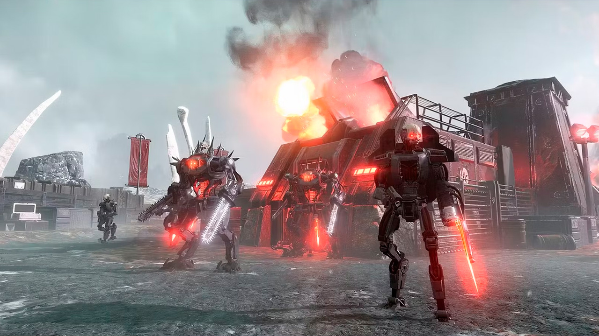

Os Autômatos em Helldivers 2 são uma das principais facções inimigas, atuando como um império socialista que controla 40 planetas e se estende pela parte esquerda da galáxia conhecida.
O Caminhante Fabril é uma máquina operada por uma máquina, descrita como uma torre ambulante guiada pela inteligência limitada de um Guarda autômato, representando uma tentativa primitiva de imitar a verdadeira inteligência. Ele é um inimigo de médio porte, com uma estrutura robusta que o torna resistente a ataques, especialmente nas pernas, que foram reforçadas em atualizações recentes para evitar que sejam destruídos com um único tiro de Rifle sem recuo GR-8.
O Hulk em Helldivers 2 é um inimigo de elite classificado como uma unidade pesada e funcionando como uma plataforma de armas pesadas, projetada para quebrar defesas inimigas e suprimir os Helldivers com fogo concentrado. Ele é um mecanismo blindado de grande porte, praticamente invulnerável a tiros de armas leves, com três variantes distintas que desempenham papéis diferentes no campo de batalha: o Bruiser, equipado com um lançador de foguetes e um canhão laser de alta velocidade para combate de médio alcance; o Scorcher, focado em combate corpo a corpo com um lança-chamas de longo alcance e uma serra circular; e o Obliterator, especializado em bombardeio de longo alcance com dois lançadores de foguetes, identificado por uma bandeira dos Autômatos em suas costas.
Em Helldivers 2, o tanque é um veículo de combate pesado que representa uma ameaça significativa devido à sua armadura robusta e poder de fogo devastador. Ele é caracterizado por sua estrutura blindada, geralmente com uma torre de armas posicionada de forma central ou traseira, embora existam debates sobre a configuração ideal de torre, já que alguns modelos, como o Tanque Aniquilador, apresentam design com torre na traseira.